Below is a smattering of research areas I have worked in or am currently working in.
Analysing stress and strain fields
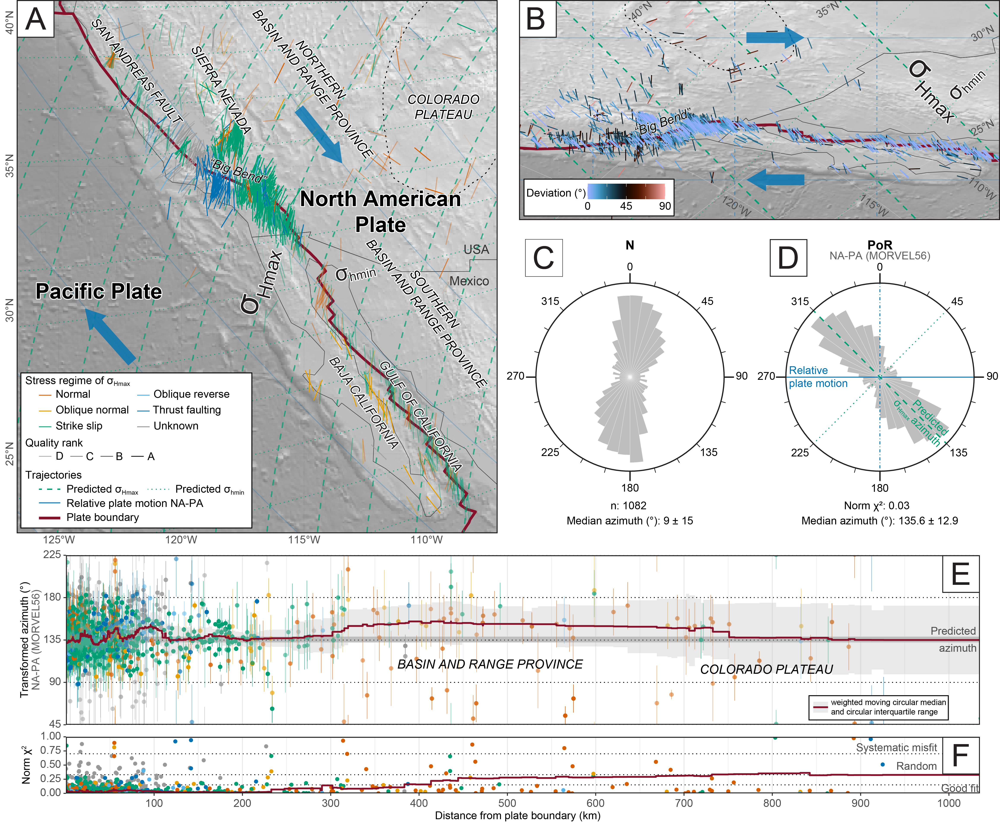Stress field of San Andreas region (Stephan et al., 2019, Fig. 7)
The spherical shape of the Earth curves straight orientations on the Earth's surface. Thus, a statistical analysis of large tectonic fields, such as stress and strain, is challenging as long as there is no reference system. In this project, I analyse these fields with respect to the first-order source, plate boundary forces.
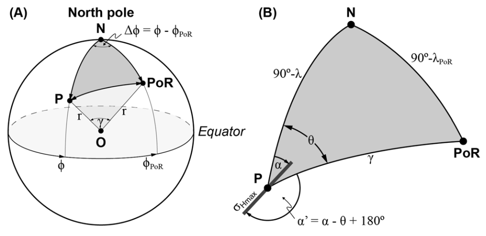Geometric concept for coordinate and azimuth transformation from a geographical North Pole reference system to a Pole of Rotation reference system (Stephan et al., 2019, Fig. 6)
Since these forces are at an agular relationship to the plate motion between two plate, the pole of rotation serves as an new reference system. Plate motion parameters are easy to determine and the new reference system also allows for testing and predicting stress fields. This is in particular useful in areas where stress and strain data are not available. And the method can be applied for paleo-stress fields, too.
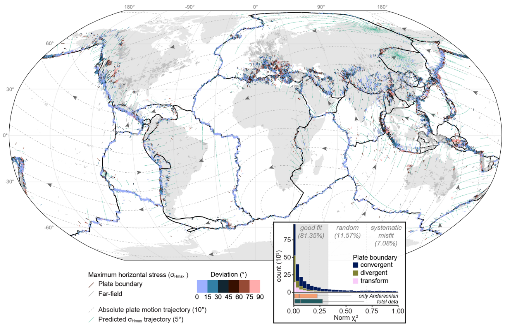Global stress field (Stephan et al., 2019, Fig. 14)
My work in usable statistical tools for stress/strain orientations is nascent, but follows from my existing work in improving statistical communication in the fields of structural geology and plate motion reconstruction. For more information on that work, see the publications below:
-
tectonicr: Analyzing the Orientation of Maximum Horizontal Stress (R package)
GUI as browser App (no R installation requiered): tectonicr-app
-
Analyzing the horizontal orientation of the crustal stress adjacent to plate boundaries
Scientific Reports (2023)
-
Geological Magazine (2022)
-
Tectonophysics (2016)
Plate motion
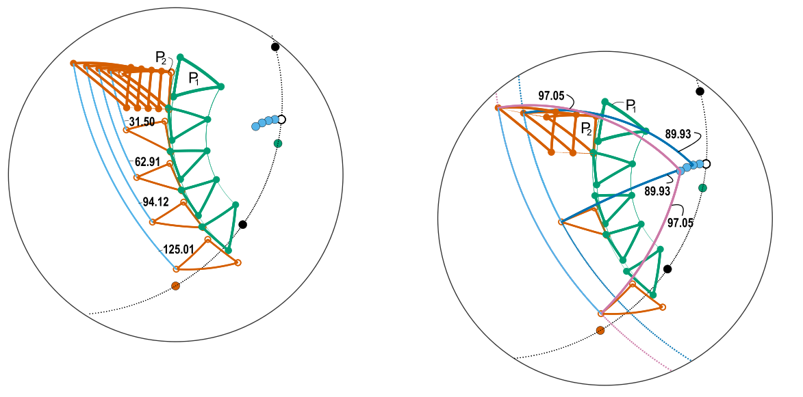Schaeben et al., 2024, Fig. 4
Every motion on the earth surface can be described as a rotation around an axis piercing through the Earth's center. Thus, also plate motion is mathematically described as the rotation of spherical polygons around rotational axes (so called Euler poles or Poles of Rotation). In this project, we use the quaternion formulation of rotations to see what happens to the three axes in a three plate scenario when we change our reference system (usually one plate). Spoiler: Two rotational axis stay fixed while the third one is constantly changing its location and rotation speed. This does not only challenge our way of reconstructing past and current plate motion, it does also has physical consequences on the deformation of plates.
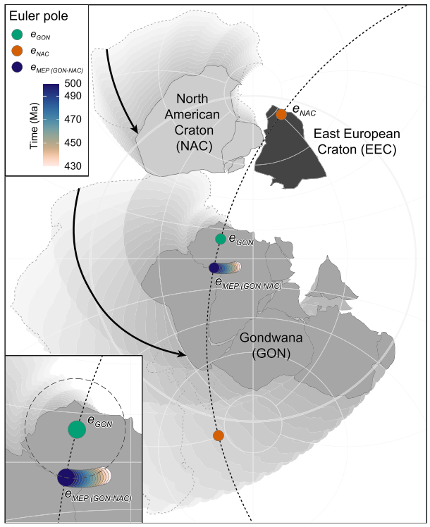Schaeben et al., 2024, Fig. 5
-
Mathematical fundamentals of spherical kinematics of plate tectonics in terms of quaternions
Mathematical Methods in the Applied Sciences (2024)
-
Euler Poles of Tectonic Plates
In In B. S. Daza Sagar, Q. Cheng, J. McKinley, & F. Agterberg (Eds.), Encyclopedia of Mathematical Geosciences. Encyclopedia of Earth Sciences Series (2022)
Reconstructing plate motion
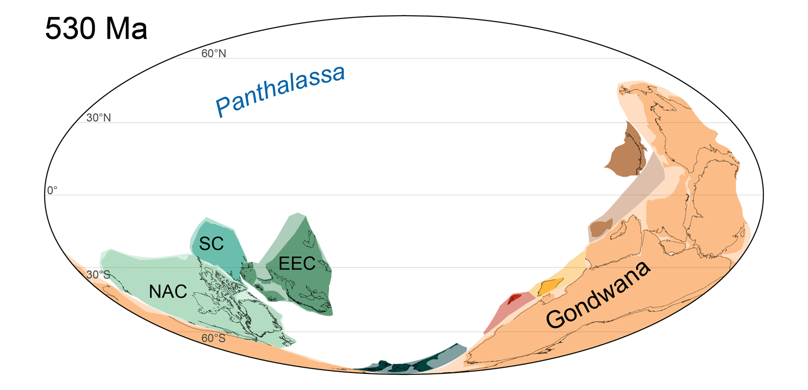Reconstruction of the supercontinent cycle Pannotia-Pangea (absolute plate motion reference frame). From Kroner et al. (2020).
Reconstructing of plate motion becomes a challenge for the geologigic past from which no oceanic crust is preserved. Constraints from the spherical pattern of continental deformation and paleogeography....
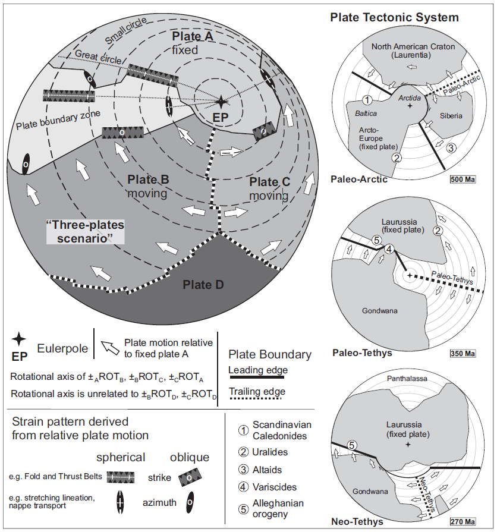Schematic sketch for a three-plate scenario characterized by a common rotational axis for the three involved plates A, B and C. From Kroner et al. (2023).
reconstruction of relative plate motion. Focus on the supercontinental cycle from Pannotia (540 Ma) to Pangea (250 Ma).
Schematic sketch for a three-plate scenario characterized by a common rotational axis for the three involved plates A, B and C. From Kroner et al. (2023).
Pangea assemblage at 370-340 Ma. From Stephan et al. (2019, ESR).

Pannotia reconstruction. From Kroner et al. (2020).
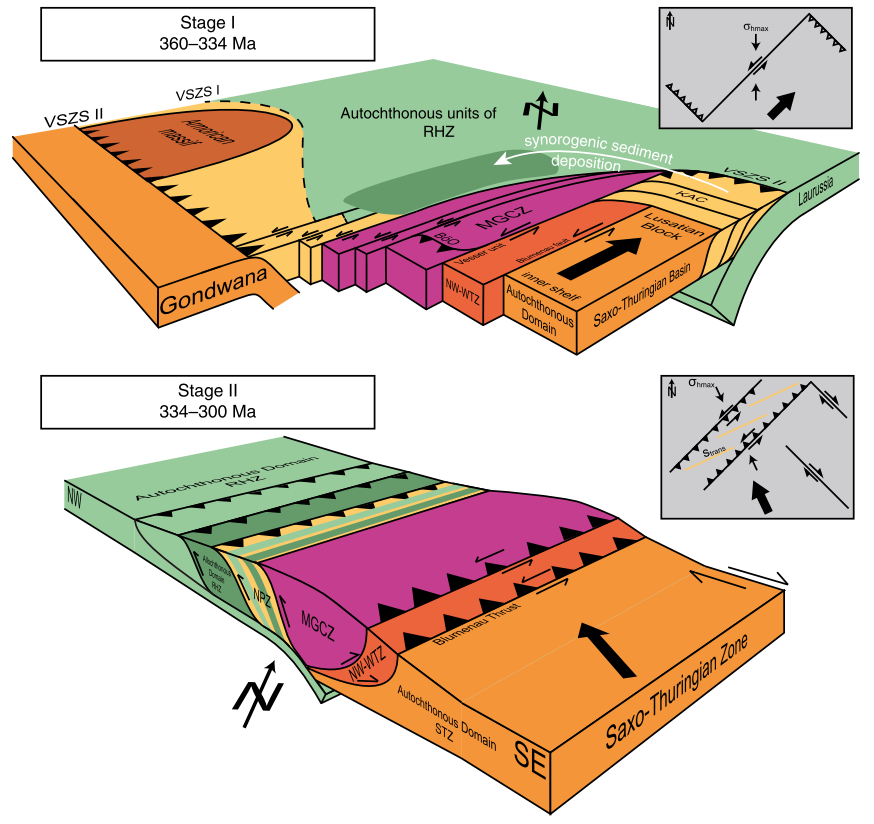"From a transform plate boundary to a bivergent orogenic wegde" - two-stage evolution model for the Saxo-Thuringian–Rheno-Hercynian boundary. From Stephan et al. (2016).
-
Zeitschrift der Deutschen Gesellschaft für Geowissenschaften (2023)
-
Paleozoic orogenies and relative plate motions at the sutures of the Iapetus-Rheic Ocean
In Y. D. Kuiper, J. B. Murphy, R. D. Nance, R. A. Strachan, & M. D. Thompson (Eds.), New Developments in the Appalachian-Caledonian-Variscan Orogen. Geological Society of America (2022)
-
Paleozoic plate kinematics during the Pannotia-Pangaea supercontinent cycle
Geological Society, London, Special Publications (2020)
-
Earth-Science Reviews (2019)
Tectonic deformation, fluid flow, and mineral deposits
-
Lithos (2021)
-
Journal of Geodynamics (2019)
Tectonic basin and provenance analysis
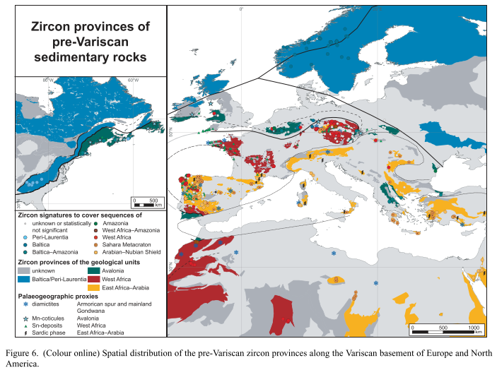 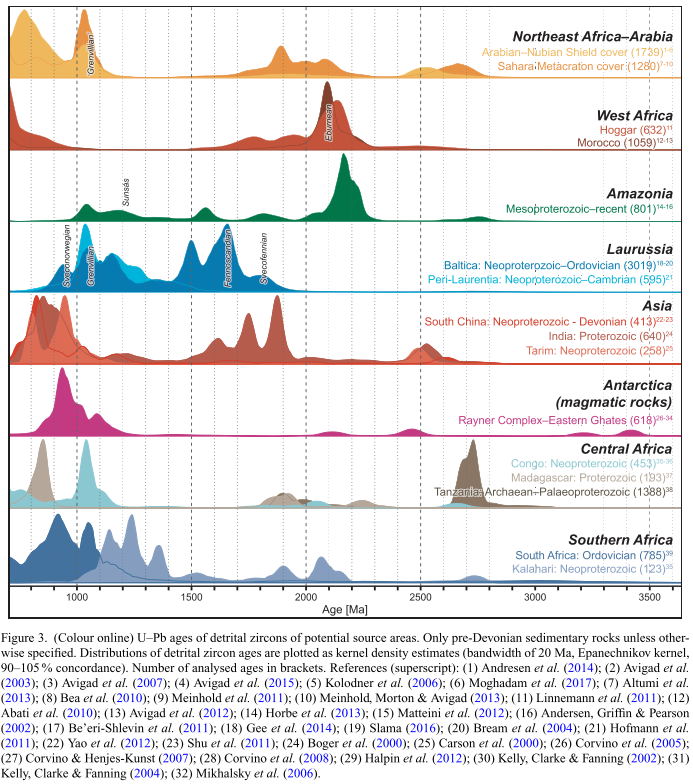 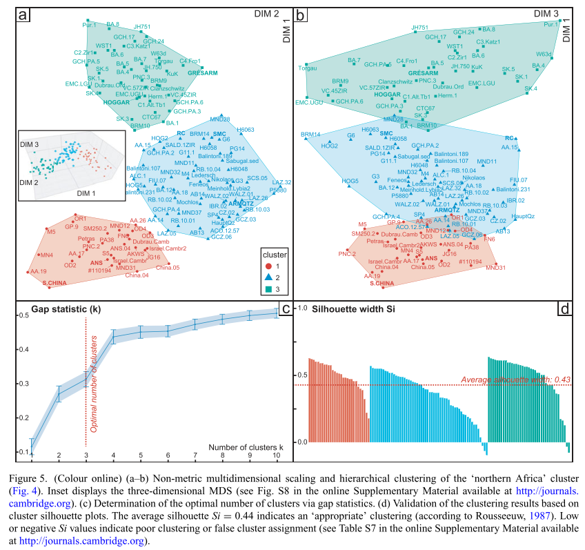-
Global and Planetary Change (2021)
-
The pre-orogenic detrital zircon record of the Peri-Gondwanan crust
Geological Magazine (2019)